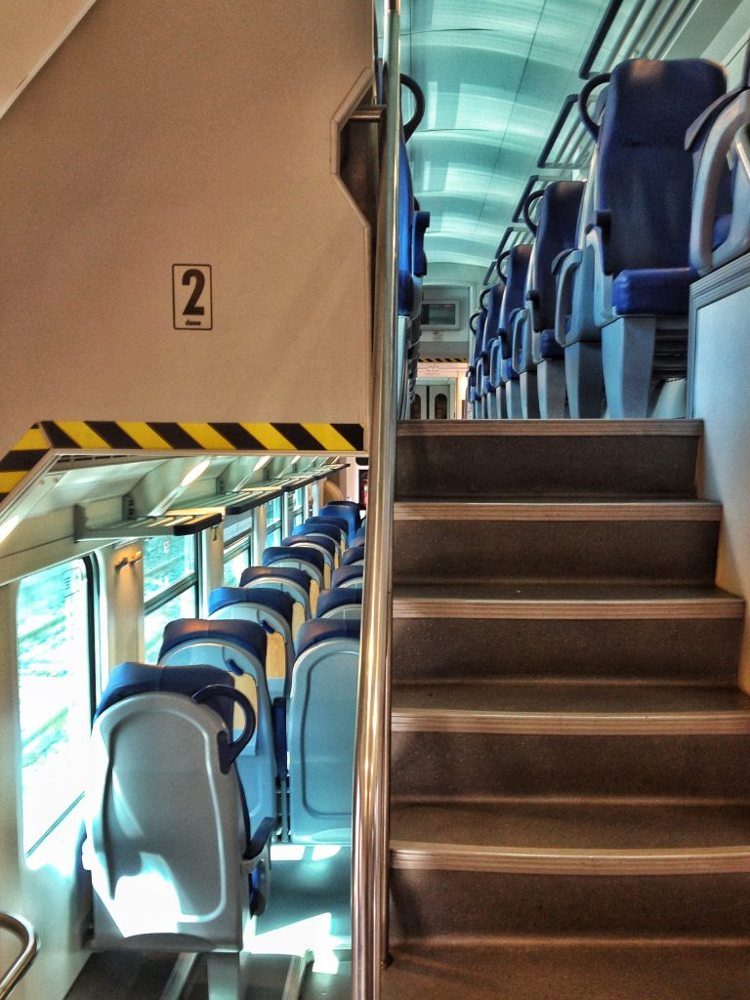

Photo by Francesca Tosolini
The primary train company in Italy is (government owned) Trenitalia. Trenitalia offers different types of trains, the fastest ones are those belonging to the Frecce (arrows) family:- Frecciarossa is the high-speed line train and it travels to up 300 km/h. This train has three different routes that connect the major Italian cities. The most popular one is Turin-Milan-Bologna-Florence-Rome-Naples-Salerno with 91 trains per day. The Frecciarossa is frequently preferred to the airplane since it travels from Milan to Rome in only 3 hours. Wi-Fi is available.
- Frecciargento connects Rome to some of the major Italian cities. With Frecciargento you can travel from Rome to Venice in about 3 and half hours, reaching a speed of 250 km/h. Wi-Fi is available.
- Frecciabianca offers many different routes, departing mainly from Milan. One of them connects Milan to Trieste in less than 4 hours (yes, don't forget to visit my beautiful hometown, recently placed by Lonely Planet at the top of a must-visit list!!). The Frecciabianca trains can reach a speed of 200 km/h. No Wi-Fi available on the Frecciabianca trains.
- Other types of Trenitalia trains are:
- The Intercity (IC) is a train that covers the entire Italian territory, connecting major and minor cities.
- The Direct train connects cities within one or two regions. It stops at fewer train stations.
- The Regional train is the slowest and is mainly used by commuters. It travels within one region (or two neighboring regions) and it stops at almost every station. It offers second-class service only.